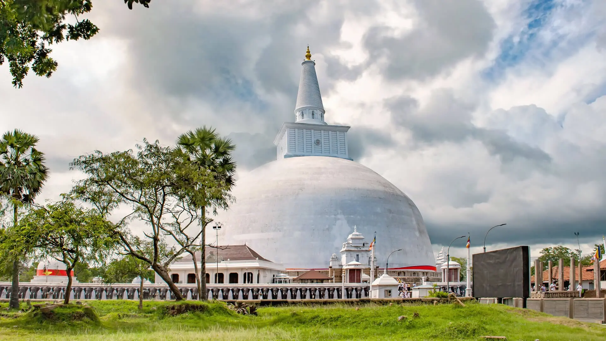

Anuradhapura was Sri Lanka's first historical capital and first planned city. Anuradhapura which is located in North-Central Province of Sri Lanka is situated along the Aruvi Aru River. In 1982 UNESCO designated it as a World Heritage Site and now the old section of Anuradhapura is prederved as an archaeological park. City of Anuradhapura is the best known of Sri Lanka's ancient ruined cities. This Ceylonese political and religious capital that was esatablished for 1300 years, was abondoned after an invasion in 993.
From Colombo it is 200km away. By taking a train from Colombo-Fort to Anuradhapura you can reach the city and by taking the intercity train it will take only about 3 hours. It is possible for you to take bus too from Colombo as it takes the same amount of time.
The Sacred City of Anuradhapura is place full of Stupas, Buddhist shrines and Monastries, splendid places, pavilions, and parks, bathing ponds, huge resovoirs and many more. Many of those resovoirs are masterpieces of architecture and engineering. Anuradhapura is a place that gives memorable sightseeing highlights. Anuradhapura was the monument of the the glorious Sinhalese Buddhist civilization.
This Buddhist Site the sacred bodhi tree is in the central part of Anuradhapura. It was brought to Sri Lanka by Sangamitta Therani. This is the most important place in whole Anuradhapura.
This Magnificent Buddhist Stupa was built by King Dutugemunu. This stupa was guarded by a wall with a friez of 344 elephants shoulder to shoulder.
This the biggest stupa to be found in Sri Lanka. It was made by King Mahasen in 3rd Century.
Thuparamaya Dagaba is the oldest stupa in Sri Lanka. It was constructed by King Devanampiyatissa. It is said that Thuparamaya enshrines the right collarbone of the Buddha.
Kuttam Pokuna also known as Twin Ponds. Built by King Aggabodhi I. These ponds have an impressive hydraulic system. The Nothern pond is smaller and the other one is larger.